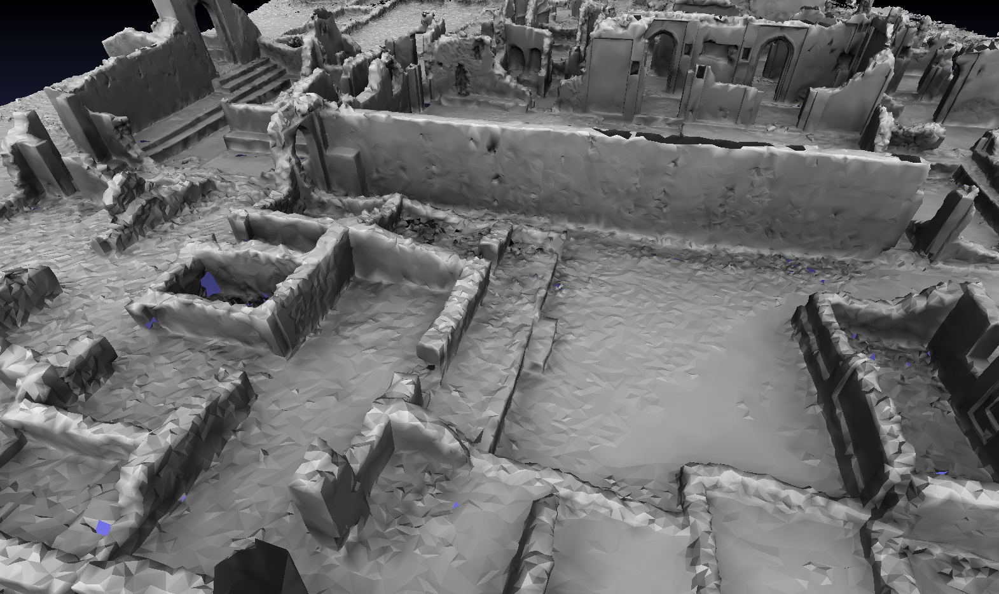

Mesh Simplifier
Introduction
This section of the project was centered on the mesh simplification component of the preprocessor.
3D triangle mesh simplification is currently a well-defined and very mature area of research with many complex algorithms. Some of these algorithms are feely available in open source mesh processing packages, therefore, we decided to implement and adapt an existing solution into a component that could be used within our preprocessor.
The research question I sought to answer is:
“Can an existing mesh simplification implementation be adapted to work with an out-of core hierarchical level of detail mesh scheme?.”
Design and Implementation
The design and implementation of the simplifier tool (known as SimplFy) were heavily guided by experimenting with the Tridecimator simplifier found in VCG (a Quadric Error Edge Collapse implementation). Following a visual inspection of meshes simplified with this algorithm, and due to its poor documentation. We attempted to gain an understanding of the VCG implementation by refactoring its code into a new design.

Figure 1: Simplifier design. Green are elements are based on VCGlib implementation, blue elements are customized/new.
The pre-processor spatially divides the mesh into chunks. Each of these chunks is then simplified before being re-stitched together.
Figure 2: Seams are formed when the edges of mesh chunks (sections) are deformed before being stitched back together.
The creation of seams can be avoided by enabling Tridecimators boundary preservation, however, this includes the boundaries surrounding any holes in a mesh. Meshes cannot be simplified beyond this boundary face count without detail compromising artefacts.

Figure 3: Gede, left with all border triangles (~125 000) highlighted in red, right after simplifying Gede to ~125 000 directly with tridecimator, with border preservation enabled.
The simplifier was adapted by enabling support for coloured vertices, post simplification mesh cleaning and a by redefining how border triangles are identified. The pre-processor specifies a bounding box that defines the mesh volume of the mesh chunk. All triangles that intersect or exist outside of the bounding box are defined as boundary triangles. The rectangular edges of each chunk are then preserved until they are stitched together.


Figure 4: Gede simplified to 30 000 faces with an early version of the mesh pre-processor. Left is without boundary preservation, right is with custom boundary preservation.
Results
Meshes were pre-processed with SimplFy and Tridecimator. These processed meshes were then visually compared to evaluate the changes made in SimplFy. The final version of the pre-processor creates a level of detail hiararchy with the root node containing the full mesh simplified down to 400 000 faces.


Figure 5: Jago with per-vertex colour (30Million faces) Simplified using Preprocessor using: top left -SimplFy w/o boundary preservation, top right -SimplFy w/ custom boundary preservation, bottom left -Tridecimator w/o boundary preservation, bottom right -Tridecimator w/ boundary preservation.
Figure 6: Chapel of Nossa with per-vertex colour (9.5Million faces) Simplified using Preprocessor using: top left -SimplFy w/o boundary preservation, top right -SimplFy w/ custom boundary preservation, bottom left -Tridecimator w/o boundary preservation, bottom right -Tridecimator w/ boundary preservation.
Figure 7: Jago with and without the custom boundary preservation. Left -without boundary preservation , right- with custom bounding box boundary triangle preservation.
The revised boundary preservation successfully removes seams (Figure 4, 6), however, it produces a new problem. Small holes in the mesh seem to grow rapidly (Figure, 6 top right), a problem that especially manifests itself in large meshes (Figure 7). When meshes are composed of multiple aligned chunks, the boundaries in these chunks recede, creating massive cracks in the model.
Conclusion
Working backwards from VCG’s source, although time consuming, allowed the simple addition of per vertex colour support and post simplification mesh cleaning. Simultaneously solving the lighting glitches and per vertex colour support.
Zamani meshes can be made up of multiple disconnected (although closely aligned) mesh ‘chunks’. The borders between these chunks recedes rapidly when processed using the modified boundary preservation in SimplFy, degrading visual quality. In general meshes looked better with seams then with the custom bounding box boundary triangle definition.
Custom boundary preservation aside, Tridecimator was successfully adapted to our mesh viewing suite.